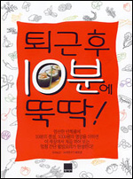

[요리 고수를 위한 책 '주방장 퇴근 후 10분에 뚝딱!']
어쩌다 책이 생겼다.
그림이 작아서 잘 안보이겠지만 제목 밑에 다음과 같은 문구가 있다.
'엄선한 반제품에 10분의 정성, 1000원의 영양을 더하면 이 세상에서 처음 먹어 보는 엄청 간단 웰빙요리가 탄생한다!'
이 책의 특징은 각 요리별로 한페이지도 안되는 공간이 할당되어 있다는 것과 요리마다 예상 소요시간과 비용이 적혀 있다는 것이다. 예를 들면 '탱글탱글 야끼소바 7분+1000원' 이런식이다.
그리고 재료도 적당히 '우동 2팩' 이런게 아니라 '가쓰오 우동 2팩' 과 같이 정확한 상품명까지 다뤄놓고 있다.
조금씩 언급하고 있는 이 요리. '탱글탱글 야끼소바' 를 소개한다.
----------------------------------------------------------------------------------------
요리명: 탱글탱글 야끼소바 7분+1000원
주재료: 가쓰오 우동 2팩
부재료: 가쓰오부시, 청경채 4개, 마늘 3쪽, 양파 1/4개, 홍고추 1개, 식용유 1큰술
양념: 액상스프 1팩, 참기름 1작은술, 후추 약간
1. 우동 면은 면발이 풀릴 정도로 끓는 물에 살짝 데친다.
2. 청경채는 4등분하고, 양파는 얇게 채 썬다.
3. 팬에 기름을 두른 후 마늘과 홍고추를 먼저 볶다가 나머지 야채와 우동 면을 넣고 잠시 볶은 후 액상스프를 넣는다.
4. 액상스프가 우동면에 스며들면 불을 끄고 참기름과 후추를 넣고 가볍게 섞어준다.
5. 그릇을 먹음직스럽게 담은 후 가쓰오부시를 얹는다.
----------------------------------------------------------------------------------------
정성들여 읽어보자.
내가 이 요리를 만들자면 준비시간을 포함해서 70분의 시간과 10,000원의 돈이 필요할것 같다.
다른 요리는 어떨까?
----------------------------------------------------------------------------------------
요리명: 아이디어 섞음초밥 10분+1000원
주재료: 현미밥 2팩
부재료: 게맛살 4개, 계란 1개, 오이 1/2개
양념: 초밥용 분말식초 1+1/2 큰술, 소금 약간
1. 현미밥에 초밥용 분말식초를 넣고 주걱으로 섞어준다.
2. 게맛살을 잘게 결대로 찢는다.
3. 계란에 약간의 소금을 넣어 푼 후 얇게 지단을 부친다.
4. 오이는 반으로 가른 후 얇게 섞어 소금에 살짝 절여 찬물에 헹군다.
5. 지단을 3cm 길이로 곱게 썬다.
----------------------------------------------------------------------------------------
10분은 치밀한 준비와 고수의 솜시로 커버할 수 있다지만 1000원은 대체 뭘까?
거의 모든 요리가 다 이런식이다. 온통 10분에 1000원.
내가 너무 민감한건가?
뭔가 많이 속는 듯한 기분이 든다.